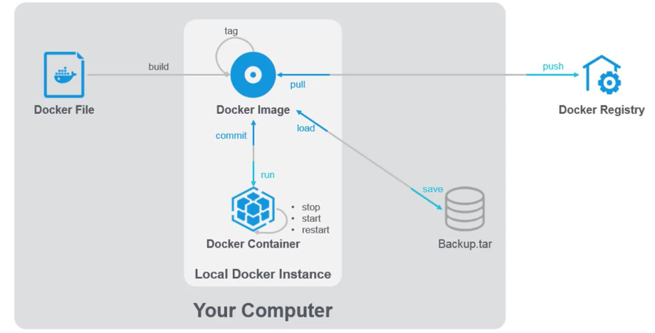
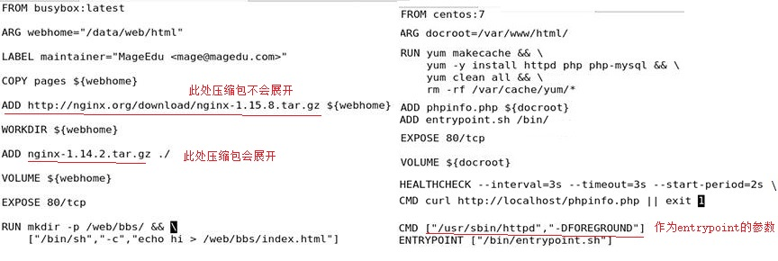
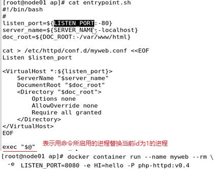
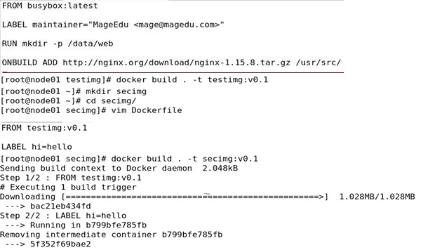
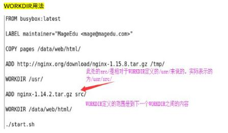

Dockerfile

docker commit实现
分层机制
aufs overlay2
cow 写实复制
容器在启动时没有指定只读时，会创建一个可写层，可写层附加在它底层依赖的镜像之上，层层链式依赖关系，挂载出镜像栈，并联合挂载在一起，成为一个运行环境，
镜像分层结构，链式的依赖下一层
基于同一个镜像，启动多个容器，它们之间是共享镜像层的
基于当前的可写层，构建一个镜像层，使用docker commit，可以添加所需要的程序或文件
把容器的可读写层转化成只读层，即从容器状态【可读写文件系统】变为镜像状态【只读文件系统】，可理解为【固化】
相比之Dockerfile的方法会更加自动化，更加方便快捷，而且功能也更强大。
Docker build方法底层里也是在基础镜像下启动容器然后commit的，但是这些不需要我们手动去commit以及rm，都是自动化的
dockerfile是为快速构建docker image而设计的，
当你使用docker build命令的时候，docker 会读取当前目录下的命名为Dockerfile(首字母大写)的纯文本文件并执行里面的指令构建出一个docker image
Docker 镜像、容器和 Dockerfile 三者之间的关系
使用 Dockerfile 定义镜像，运行镜像启动容器

Dockerfile基本要求
1.必须有一个工作目录，
只能放置Dockerfile相关资源、配置的文件，作为根目录
目录下文件名为Dockerfile和Dockerfile中定义要复制的文件
此目录作为起始目录
2.语法
Dockerfile就是一个纯文本文件
约定俗成指令要求大写，顺序语句，没有多余语法，文件名
第一条指令必须为‘FROM’，用于指定其后构建新镜像所使用的基础镜像，Docker将会基于该镜像构建新镜像，其后的命令也会基于这个基础镜像。
在一个Dockerfile文件中创建多个镜像时，FROM可以多次出现。只需在每个新命令FROM之前，记录提交上次的镜像ID。
tag或digest是可选的，如果不使用这两个值时，会使用latest版本的基础镜像
3.每一条指令都会生成单一的镜像层，尽量关系紧密的放置一个层
4.镜像内唯一要运行的程序一定必须要运行在前台
.dockerignore文件
1.dockerignore是工作目录中专门记录需要忽略的文件列表
2.而且docker build会自动忽略.dockerignore自身和记录在其中的所有文件
Dockerfile FORMAT
MAINTANIER
用于指定作者信息，用于声明作者，并应该放在FROM的后面
MAINTAIN <name>
例：MAINTAINER xavi XXX@XXXX.com
ENV
设置环境变量,形式为：
variable=value ....可以写多个
variable value 只能写一个
${variable;-word} -：variable没值，使用word
${variable;+word} +:variable有值，使用word，否则返回为空
$variable_name或是${variable_name}，这两种格式被同等对待，但是括号可以处理空格的状态，
如果某个环境变量的值是由一组英文单词构成，那么你可以将其使用""进行圈起来
例：
TITLE="iphone"
var=123
echo $var
echo ${var;-100}
LABEL
LABEL用于为镜像添加元数据，元数以键值对的形式指定，不受文件系统控制的指令
一个镜像可以有多个label。
要指定多个labels，Docker推荐尽可能地把多个labels合并到一个LABEL指令中去。
每一个LABEL指令会生成一个新的镜像层，如果使用多个label，将导致构建出一个低效的镜像
label是累积的，包括FROM镜像的lable。
如果Docker遇到一个label/key已经存在，那么新的值将覆盖这个label/key
例：
LABEL multi.label1="value1" multi.label2="value2" other="value3"
要查看一个镜像的label，使用docker inspect命令
docker inspect --format '{{json .Config.Labels}}' wordpress | python -m json.tool
COPY
COPY <源路径>... <目标路径>
COPY ["<源路径1>",... "<目标路径>"]
例子：
COPY /data/ /usr/local/
注意：
1. src：必须为build上下文中的路径，可使用相对路径
2.如果src是目录，其内部的文件或子目录会自动被递归复制，但src自身不会被复制
等于cp -r /src/* /dest/
3. src有多个，或者src使用通配符，则dest必须是一个目录，且必须以/结尾
4. 如果dest事先不存在，它将会被自动创建
ADD
ADD <src>... <dest>
ADD ["<src>",..."<dest>"]
ADD 指令和 COPY 的格式和性质基本一致。但是在 COPY 基础上增加了一些功能
注意：
1.如src为URL时且dest不以/结尾，ADD会自动将指定的文件下载并创建为dest，
2.如src为URL时且dest以/结尾，则会下载指定的文件并保存为dest/FILENAME ，但是其权限被自动设置成了600，需要额外增加一层RUN命令进行更改
建议只用一层RUN，使用curl或者wget工具进行下载，并更改权限，然后进行解压缩，最后清理无用文件
2. 如src是一个本地的tar文件，则会被自动展开为一个目录，但通过URL获取到的文件则不会自动展开，即在本地的就展开，互联网的就不展开
3. 如src有多个，或使用通配符，则dest必须是目录且以/结尾，如dest不以/结尾，
则被视为一个普通文件，src的内容将被直接追加写入到dest文件中
ADD /my_folder /data
VOLUME
VOLUME <路径>
VOLUME [“<路径1>”, “<路径2>”, …]
用于在image中创建一个挂载点目录，以挂载Docker host上的卷或其它容器上的卷
注意：
1.在dockerfile中定义的卷，启动容器时，是被docker管理的卷与宿主机的某个
路径建立关联关系
2.如果需要定义的卷与宿主机特定的目录建立关联关系，还需要在run container时
指定-v选项
3.如果挂载点目录路径下此前在文件存在，docker run命令会在卷挂载完成后将此
前的所有文件复制到新挂载的卷中
4.可以通过docker run命令中指定-v参数来进行覆盖
例：
vim Dockerfile
....
VOLUME /data/web/html/
#docker run --name c1 -it --rm myimg:v6 /bin/sh
[root@test]# docker inspect c1 | egrep -A 5 "Mounts|Volumes"
"Mounts": [
{
"Source": "/var/lib/docker/volumes/c6f35c8233da83765fab0ab3ab0f318cd37eae7448d2ba40ea1bf7e712f30cfc/_data",
"Destination": "/data/web/html",
"Volumes": {
"/data/web/html/": {}
EXPOSE
端口暴露
EXPOSE <端口1> [<端口2>...]
这只是一个声明，在运行时并不会因为这个声明应用就会开启这个端口的服务,并不会自动在宿主进行端口映射
docker run -P时，才会自动随机映射 EXPOSE 的端口。
使用docker port id名查看
ARG
arg是在build阶段进行传值，替换dockerfile中的值
ARG <name> [=<default>] 可以设置默认值
构建参数ARG和ENV指令一样，都是设置环境变量。
与之不同的是，ARG设置的环境变量只是在镜像构建时所设置的，在将来容器运行时是不会存在这些环境变量的
arg是在build阶段进行传值，替换dockerfile中的值
在ARG指令定义变量之前引用这个变量的得，都会得到空值
ARG构建参数可以通过docker run命令中的--build-arg参数来进行覆盖
当build创建镜像时没有传值，则使用在dockerfile中设置的默认值
不推荐在构建期间的命令行传递密码如github密钥，用户凭证等数据。
ARG home="/data"
docker image build --build-arg home="/web" -t myimg:v1
RUN
RUN指令使用的是CMD命令。run可以有多个命令，每一个指令都会建立一层
格式为
RUN <command>
RUN ["可执行文件", "参数1", "参数2"]
使用一个 RUN 指令，并使用 && 将各个所需命令串联起来。将其简化为了1 层。
docker run命令指定要执行的命令可以覆盖RUN指令
Dockerfile 支持 行尾添加 \ 的命令换行，以及行首 # 进行注释的格式。
镜像是多层存储，每一层的东西并不会在下一层被删除，因此镜像构建时，任何无关的东西都应该清理掉。
例：
RUN yum install httpd && mkdir -p /usr/src/redis && yum clean all
RUN ["/bin/bash", "-c", "echo hello"]
CMD
shell格式：CMD <命令>
exec格式：CMD [“可执行文件”, “参数1”, “参数2”, …]
使用shell格式，那么实际的命令会被包装成为sh -c的参数的形式进行执行
Dockerfile可以有多条 CMD 指令，但只有最后一条指令有效
docker run中指定了CMD命令，并且在Dockerfile中也指定了CMD命令，最终只会执行docker run命令中指定的命令
Docker容器后台运行,就必须有一个前台进程.
CMD ["/usr/sbin/httpd","-DFORGROUND"] 不以shell进程进行，运行在前台可以被覆盖
例：
CMD echo "Hello Docker!"
CMD ["sh", "-c", "echo", "Hello Docker!"]
ENTRYPOINT
ENTRYPOINT <command>
ENTRYPOINT ["可执行文件", "参数1", "参数2"]
配置容器启动后执行的命令，并且不可被 docker run 提供的参数覆盖
只允许被--entrypoint "cmd"覆盖
每个 Dockerfile 中只能有一个 ENTRYPOINT，当指定多个时，只有最后一个起效
ENTRYPOINT与CMD同时存在，CMD命令就是ENTRYPOINT的参数
一般ENTRYPOINT后面跟脚本，CMD命令作为脚本的参数
例：容器启动时会显示 Hello docker!
CMD "Hello docker!"
ENTRYPOINT echo
容器最终执行的命令是curl -s -i http://ip，-i参数被传递到ENTRYPOINT中，最终在控制台中会输出HTTP头信息
ENTRYPOINT ["curl", "-s", "http://ip"]
docker run -it centos:7 -i
USER
USER [UID]
USER命令用于设置运行容器的UID
可以在docker run命令中的-u参数进行覆盖
默认是root
例： USER 751
WORKDIR
WORKDIR /path
用于设置CMD指明的命令的运行目录。
1.用于为Dockerfile中所有的RUN、CMD、ENTRYPOINT、COPY和ADD指定设定工作目录
2.WORKDIR指令可出现多次，表示下个指令可以以此目录为父目录，路径可以表示为相对
路径，也可以写成绝对路径
3.WORKDIR的有效范围当前workdir向下，下一个workdir之前的范围
4.另外，WORKDIR也可调用由ENV定义的环境变量的值，如果下次修改环境变量的值，响应生成信息的镜像层
5.而且如果设定了WORKDIR，容器启动时，默认就进入到workdir路径了
6.可以通过docker run命令中的-w参数来进行覆盖
HEALTHCHECK
格式：
HEALTHCHECK [options] CMD <命令>：检查容器健康状态的命令
HEALTHCHECK NONE：如果基础镜像有健康检查指令，这一行将会屏蔽掉其健康检查指令
选项：
–interval=<间隔>：两次检查的时间间隔，默认为30s
–timeout=<时长>：健康检查命令运行超时时间，如果超过这个时间，本次健康检查将会判定为失败，默认为30s
–retries=<次数>：当连续失败指定次数之后，则将容器状态视为unhealthy，默认为3次
HEALTHCHECK允许额外加一层，加一个命令，模拟客户端向容器发起请求，判断健康状况
当一个容器设置了healthcheck之后，除了正常的状态，它多了一个health状态。
当健康检查通过后，它变成了healthy(不管之前是什么状态)当连续出现几次失败后，就变成unhealthy
有多个HEALTHCHECK指令，那么只有最后一个才会生效！！！
例：
HEALTHCHECK --interval=5s --timeout=3s CMD curl -fs http://localhost/ || exit 1
健康检查状态
docker inspect --format '{{json .State.Health}}' wordpress | python -m json.tool
SHELL
允许默认的shell形式被命令形式覆盖
在Linux系统中默认shell形式为 ["/bin/sh", "-c"], 在 Windows上是["cmd", "/S", "/C"]。
SHELL指令必须用Dockerfile中的JSON格式写入。
SHELL指令在Windows上特别有用，其中有两个常用的和完全不同的本机shell
cmd和powershell，以及包括sh的备用shell。
SHELL指令可以出现多次。每个SHELL指令都会覆盖所有以前的SHELL指令，并影响所有后续指令。
ONBUILD
ONBUILD是一个特殊的指令，它后面跟着的是其他指令，比如COPY、RUN等，而这些命令在当前镜像被构建时，并不会被执行。只有以当前镜像为基础镜像去构建下一级镜像时，才会被执行
ONBUILD <其他指令>
例：
ONBUILD RUN mkdir test
查看构建历史
docker image history --help
例



